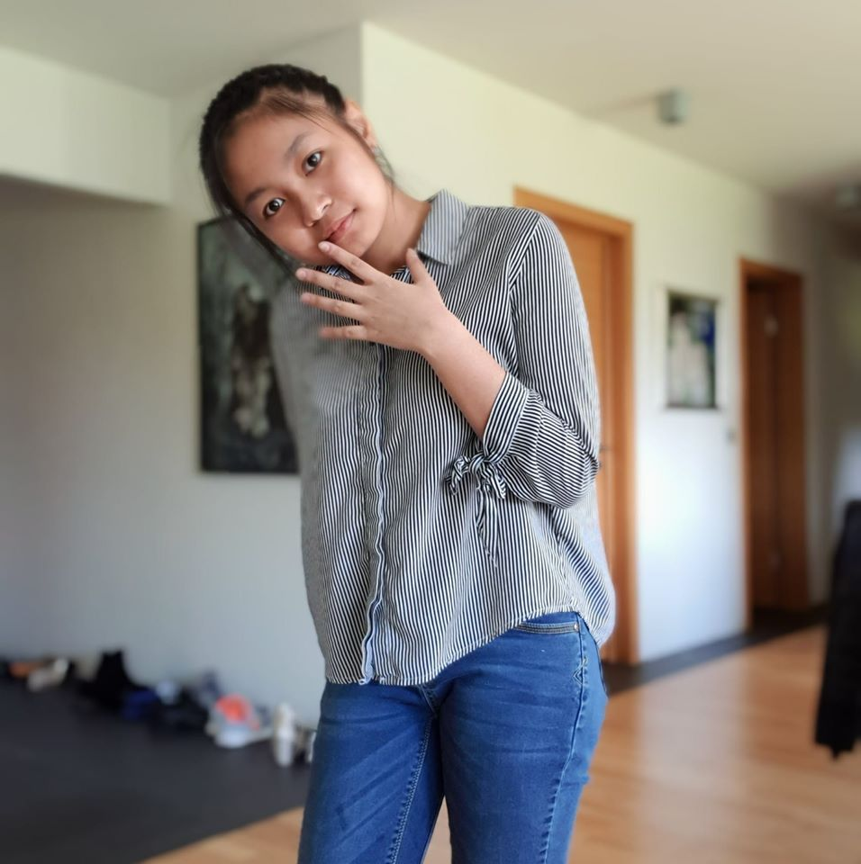

My Profile
Benjaporn Madkoksung
Afmæli : 22 maí 2002
My address : Logafold 61 Reykjavík Iceland
Skóli : Tækniskóli
Email : Benjaprae@gmail.com
Facebook : PMB Benjamin
Instagram : RealPMB

Benjaporn Madkoksung
Afmæli : 22 maí 2002
My address : Logafold 61 Reykjavík Iceland
Skóli : Tækniskóli
Email : Benjaprae@gmail.com
Facebook : PMB Benjamin
Instagram : RealPMB
Skóli : Tækniskóli (Háteigsvegur)
Braut : Tölvubraut stúdentspróf (TRB19)
Annir : 2020V
Áfangar : VEFÞ1VG05AU
Útskriftir : Íslenskubraut fyrir útlendinga
Útskriftir grunnskóla : วังเด็กพัฒนา (Patbac)
Grunnskóla : Foldaskóla
Ég heitir Benjaporn Madkoksung, nickname Prae en skóla kölluð Benja.
Ég er 17 ára, fæddur 22 maí 2002.
Ég fæddist í Tælandi og hef búið á Íslandi í um það bil 7 ár.
Ég var læra í grunnskóla í Foldaskóla en útskrifaðist í grunnskóla í Thailandi.
Ég tala tælensku, ensku og íslensku.
Logo PMB er frá nafninu mínu. P er frá gælunafni Prae, M er frá eftirnafninu Madkoksung og B er frá nafninu Benjaporn
Mín áhugamál : teikning, syngja, hlusta á tónlist og innanhús arkitekt.
Uppáhalds áfanga : Stræðfræði, Vefhönnun og Forritun
Uppáhalds youtube channel : Tony_GospeL , Thing Of Living
Uppáhalds lagið mitt : Koshidoudou cover by Tony_GospeL, Secret love song
Uppáhalds video : ได้พบเธอ(Fortunatery, I met you)
Lagið heitir ได้พบเธอ(Fortunatery, I met you).
Myndbandið er úr mynd sem heitir 2 moon the serie.
Af því mynd og Myndbandið hjálpar til við að gera textana öflugri.
2 moon the serie er rómantísk mynd Og tónlistin hjálpar einnig til við að auka rómantíkina.
# Myndin er teiknuð inn á blað og nota scann til að fá myndina inn
# (Logo frá Verkefni 4 í áfanga VESM1VS05AU)